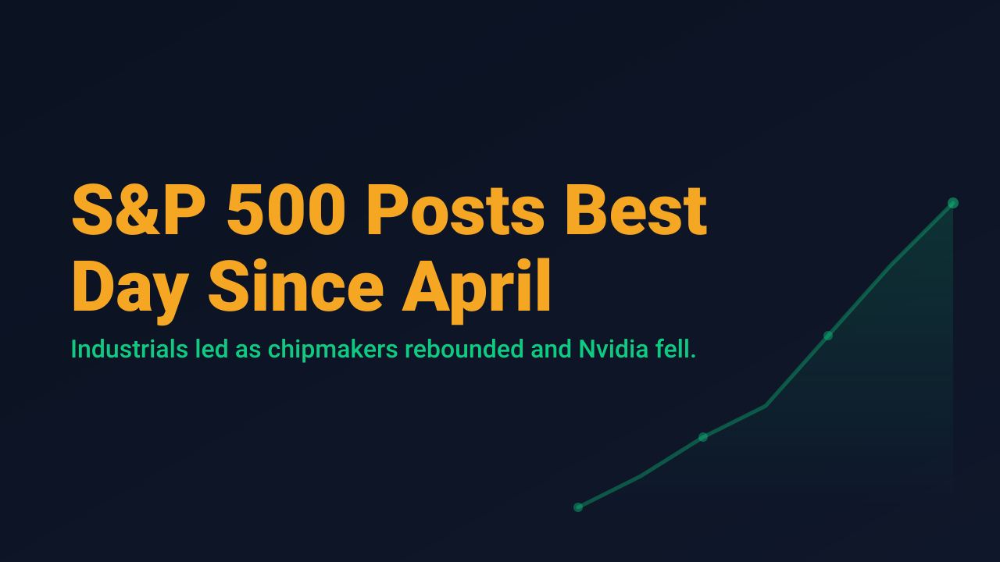
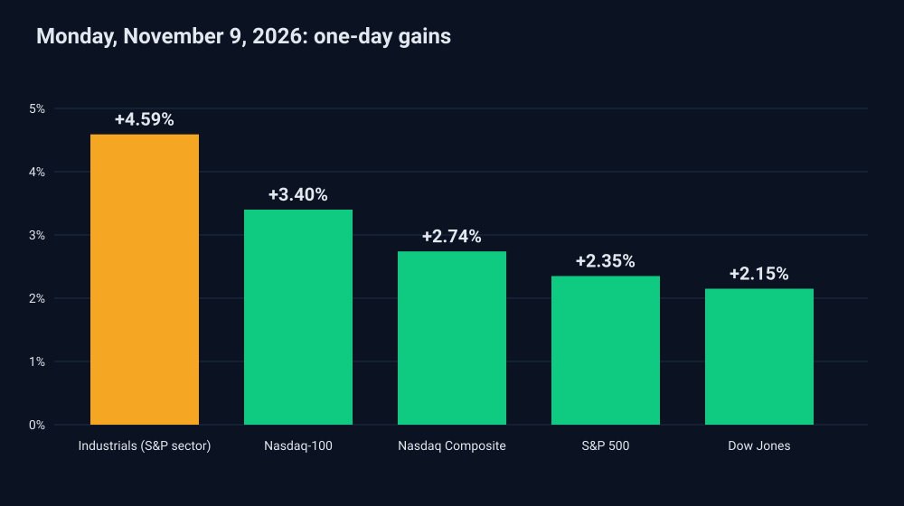

S&P 500 Posts Best Day Since April

US equities posted their strongest session in months on Monday, November 9, 2026. The S&P 500 gained 2.35% to close at 7,549.94, a move StockTitan described as its best day since April 8. The Nasdaq Composite rose 2.74% to 25,253.14, and the Dow Jones Industrial Average added 2.15% to 52,389.75, a gain of 1,104 points.
The advance was notable for its breadth as much as its size. According to Yahoo Finance, every sector finished higher, with industrials leading at 4.59%. TheStreet reported that the Nasdaq-100 rose 3.40%. Semiconductors drove the technology rebound, with AMD up 13.26% and Broadcom up 8.78%. Constellation Energy gained more than 10% after beating earnings estimates and raising its full-year guidance.

Not every large name participated. Nvidia fell 4.27% to $178.67, removing about $192 billion from its market value, after its board opened an investigation involving CEO Jensen Huang. The decline in the group's best-known constituent while peers rallied is a reminder that index-level strength can mask meaningful dispersion underneath it.
The macro backdrop was supportive but unsettled. Crude oil fell in early trading, with WTI down 2.99% to $88.11 according to TheStreet, after President Trump downplayed renewed strikes on Iran. The 10-year Treasury yield edged higher to 4.88%, per Yahoo Finance. Geopolitical risk remains in the background, and a single session of relief does not resolve it.
For swing traders, a rally of this size across every major index raises a practical question: is the move a durable change in positioning, or a one-session reaction that invites late entries at extended prices? Breadth is a constructive sign, but it does not by itself define an entry, a stop, or a position size.
One strong session does not set a trend. The more useful read over the coming days is whether leadership holds in industrials and semiconductors, whether Nvidia stabilizes, and whether oil and yields remain cooperative.